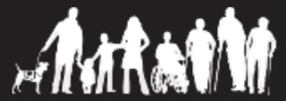

<footer>
    <div class="footer-container">
        <div class="footer-section about">
            <h2>About The AI Clinic</h2>
            <p>The AI Clinic is an initiative of the UW iSchool to make language models more approachable in research.</p>
        </div>

        <div class="footer-section about">
            <h2>Supported by <a style="color:white" href="https://tcat.cs.washington.edu/">The Taskar Center for Accessible Technology</a></h2>
            <a href="https://tcat.cs.washington.edu/"></a>
        </div>

        <div class="footer-section contact">
            <h2>Contact</h2>
            <p>Dr. Bill Howe: <a style="color:white" href='mailto:billhowe@uw.edu'>billhowe@uw.edu</a></p>
        </div>
    </div>
    <div class="footer-bottom">
        <p>&copy; 2025 The AI Clinic | All rights reserved.</p>
    </div>
</footer>

<!-- FontAwesome Icons -->
<script src="https://kit.fontawesome.com/a076d05399.js" crossorigin="anonymous"></script>
